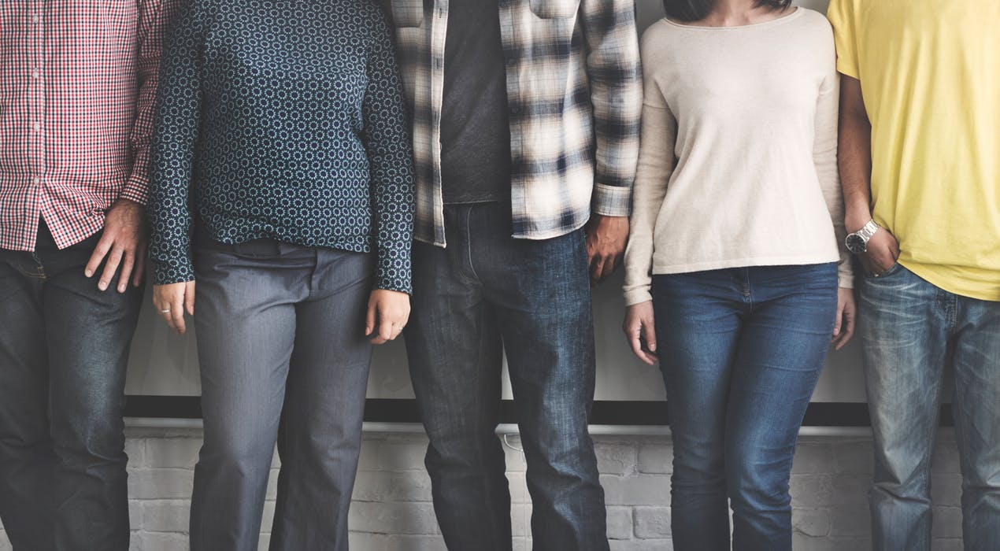

Any form of training produce endorphins which makes you happier and happiness makes you live longer. The reason why you should start playing table tennis for health reasons and not just go outside runing is the cobination of step,brain cordination and improvement of reflexes.
As people get older they start to lose their balance and reflexes, table tennis will help you improve this sort of problems.
As you get older friends will become more important, to find something in common with someone or with a group could be a fufilling thing. Ive meet many older people who decided to join the old boys club because of the psychical ability to play and to connect with people, it really is something for everyone.
